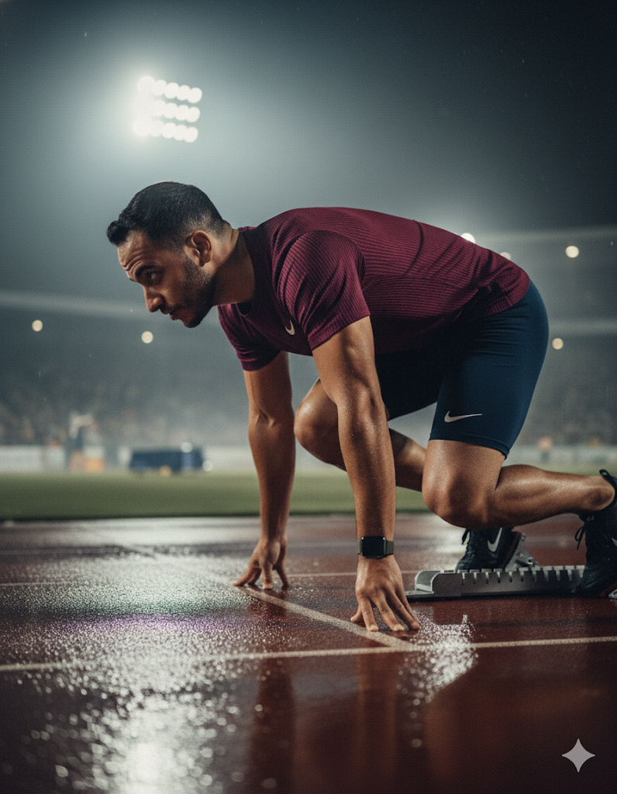
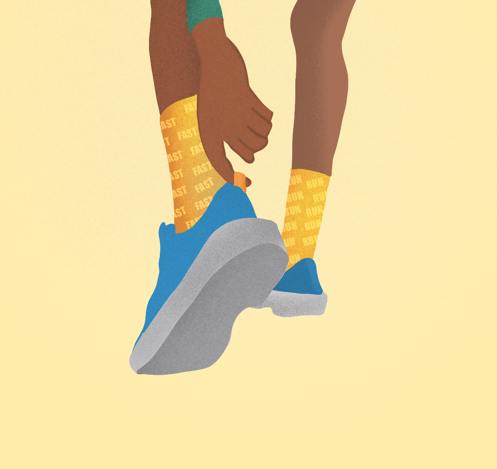
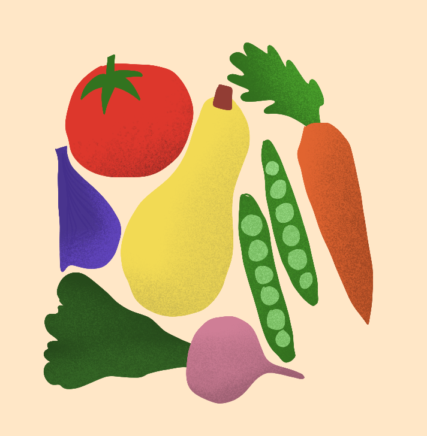

Mein Weg zum Halbmarathon
Motivation, Training und Gemeinschaft
Laufen stärkt Körper und Geist – auf dieser Seite teile ich meinen Weg zum Halbmarathon.
Zum TrainingsplanWarum ich laufe
Mein Ziel ist nicht nur das Ziel, sondern der Weg dorthin: Gesundheit, mentale Stärke und Motivation.
Gesundheit & Bewegung
Laufen verbessert die Ausdauer, Konzentration und das Wohlbefinden. Es ist mehr als Sport – es ist Balance.
Weitere Themen

Trainingstipps
Aufwärmen • Regeneration • Routine
Kleine Routinen mit großer Wirkung für deinen Laufalltag.

Ernährung
Energie für lange Strecken
Tipps für sinnvolle Mahlzeiten rund um Training & Regeneration.